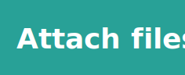

Designing for users on the
autistic spectrum
Do use simple colours
Don't use bright contrasting colours
Some users may experience sensitivity to sensory information such as colours which can cause anxiety or pain. Use a colour contrast ratio of at least 4.5:1 for text and test it with your users to get the right balance.
Do write in plain English
Don't use figures of speech and idioms

Users on the spectrum perceive language differently and might take figures of speech and idioms literally. Writing in clear, plain language will mean your content is understood by more people.
Do use simple sentences and bullets
Don't create a wall of text
Lots of unbroken text can be hard to focus on making it frustrating to read. Breaking text down into simple sentences and using bullets for important points will make your content easier to understand.
Do make buttons descriptive
Don't make buttons vague and unpredictable
Not knowing what will happen after clicking a button or link can cause users stress and anxiety. Descriptive buttons and links will help users know what to expect and give them a sense of control.
Do build simple and consistent layouts
Don't build complex and cluttered layouts

Complex and cluttered layouts can be overwhelming for users to process . Make your layout predictable and consistent. Put common components such as navigation and search on the top of a page in a highly visible area.